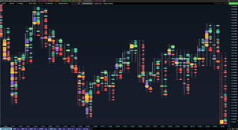
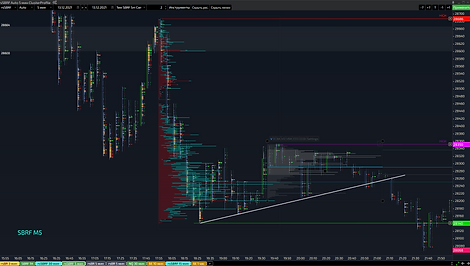
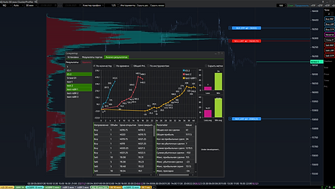
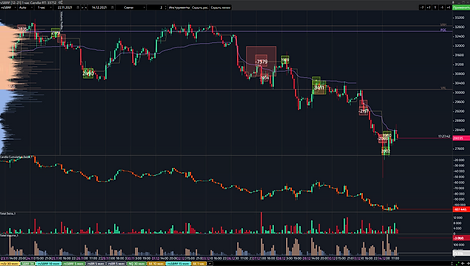
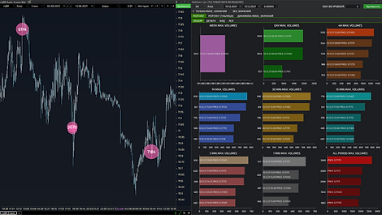
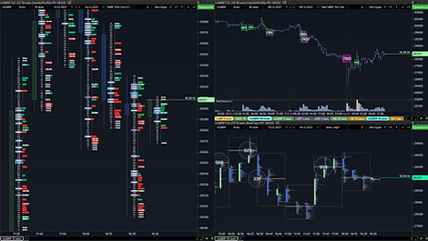

Overview of SBPro X functionality
Charts
Many types of cluster charts, combination charts, standard Japanese candlesticks,
bars and line charts. Alerts on lines, clusters and indicators.
Dynamic profiles
Standard drawing elements, Dynamic profiles (volume, delta, bid-ask, cumulative
delta, open interest). Chart magnifier. Linking. Auto duplicate lines on all
tabs/windows.
Trading Simulator
Trading on historical data with the ability to analyze test results in detail and
combine the results into one. Export results to excel or pdf. Bar analysis.
Volume indicators
Lots of horizontal and vertical volume, delta, bid-ask, cumulative delta, open
interest indicators. Cluster Search, Dynamic POC, VWAP. There are also basic
technical indicators.
Unique functionality
“Clouds” displays a filtered feed of trades right on the chart! Search for large
ticks and large accumulated volume. “Price rating” for automatic search of large
clusters: volume, delta, bid-ask.
Workspaces & templates
Customized workspaces and chart templates. Stored on the server, work with your
settings from any computer.
Charts
Many cluster charts: volume, delta, bid-ask, profiles, combined charts (the ability
to combine up to 3 types of display at the same time), as well as standard Japanese
candlesticks, bars and a line chart. Ability to analyze correlating instruments
using the "Correlator" module. The ability to set alerts (sound, pop-up windows) for
many events: reaching a price level, cluster filters, indicator filters and much
more.


Drawing tools, dynamic profiles
In addition to the standard drawing elements (lines, ellipses, Fibonacci levels,
etc.), SBProX provides a chart enlarger (the ability to analyze clusters with a
candle display type or with strong chart compression). Dynamic volume profiles,
delta, bid-ask, cumulative delta and open interest. You can also link windows to
duplicate lines and dates.
Trading Simulator
Before entering the real market, you can test your trading strategies using this
module and analyze the statistics. Trading on historical data with the ability to
accelerate the drawing of the chart (suitable for medium-term and long-term
trading), manual bar chart analysis. Detailed analysis of test results and combining
results for different days into one.


Volume indicators
The platform has many horizontal and vertical volume, delta, bid-ask, cumulative
delta, open interest indicators. Market profiles, delta and bid-ask profiles,
Dynamic POC. Search for large cluster values using the Cluster Search indicator.
There are also basic technical indicators such as Moving Average and ATR.
Advanced print ribbon
Unique functionality developed by our company. Using the Clouds indicator, you can
display a standard Time&Sales trade feed directly on the chart. Using various modes
of the indicator, you can display a large accumulated volume or single large ticks
directly on the chart in the form of graphic figures. And the Price Rating module
will automatically help you quickly select settings for cluster chart filters for
any instrument.


Workspaces and templates
Ability to save all settings (many windows / tabs and their positions, indicators,
levels and desktop pictures with all settings). Chart templates (for quickly copying
settings from one tab to another). Stored on the server, providing the ability to
work with your settings from any computer. The ability to transfer customized
workspaces to other users.